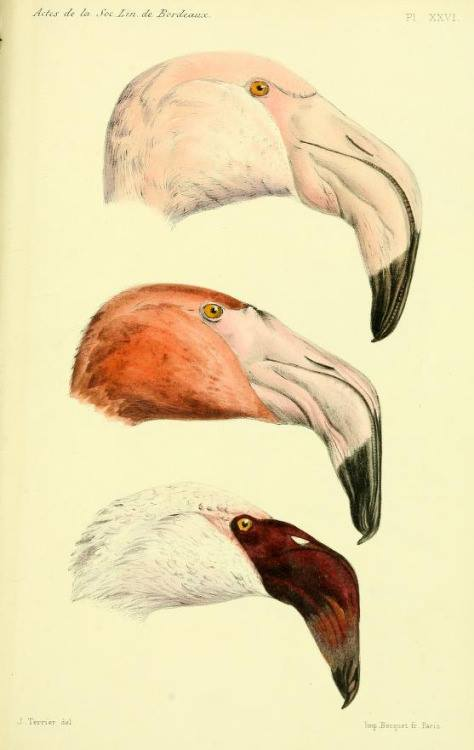

Αρχείο · Επιστημονική επικοινωνία στα ελληνικά
Το χαμόγελο του φλαμίνγκο
Πώς η ιδιαίτερη μορφολογία του ράμφους των φλαμίνγκο συνδέεται με τον τρόπο διατροφής τους — και γιατί είναι ροζ.

Αρχικό κείμενο
Τα Φλαμίνγκο είναι κάτι σαν τον Jake Tucker από το Family Guy. Οι δομές που βρίσκονται στο κεφάλι τους είναι ανεστραμμένες. Αυτό συμβαίνει επειδή τα Φλαμίνγκο όταν τρέφονται έχουν τα κεφάλια τους αναποδογυρισμένα, οπότε έχουν προσαρμόσει τα ράμφη τους σε αυτόν τον τρόπο διατροφής. Φυσιολογικά τα περισσότερα σπονδυλόζωα με γνάθους (πουλιά, θηλαστικά κλπ.) έχουν την άνω γνάθο προσκολλημένη στα οστά του κρανίου και μόνο η κάτω γνάθος κινείται όταν μασούν. Τα Φλαμίνγκο λοιπόν έχουν αντιστρέψει αυτή τη διαδικασία μετακινώντας μόνο την άνω γνάθο όταν μασουλάνε μέσα στο νερό. Ακόμη και το σχήμα τους είναι διαφορετικό από των υπόλοιπων πτηνών (μεγαλύτερη και βαθύτερη κάτω γνάθος, ενώ η άνω γνάθος είναι μικρή και ρηχή). Όποιον τον ενδιαφέρει περισσότερο ο εξελικτικός βιολόγος Stephen Jay Gould έχει γράψει ένα πολύ όμορφο έργο πάνω στα ιδιέταιρα χαρακτηριστικά των Φλαμίνγκο που λέγεται "The Flamingo’s Smile" και υπάρχει σε pdf στο διαδίκτυο.
Bonus fun fact: Το ροζ χρώμα των Φλαμίγκο προέρχεται από τις χρωστικές που βρίσκονται στους οργανισμούς που τρώνε (συχνά φύκη και καρκινοειδή). Η διατροφή τους είναι πλούσια σε άλφα και βήτα καροτενοειδή και μπορεί αυτά να είναι συνδεδεμένα με μόρια πρωτεϊνών και να έχουν πράσινο ή μπλε χρώμα. Μετά την πέψη οι καροτενοειδείς χρωστικές ουσίες διαλύονται σε λίπη που στη συνέχεια μεταναστεύουν στο φτέρωμα και γίνονται πορτοκαλί ή ροζ. Κάτι παρόμοιο συμβαίνει και στις γαρίδες κατά το μαγείρεμα.